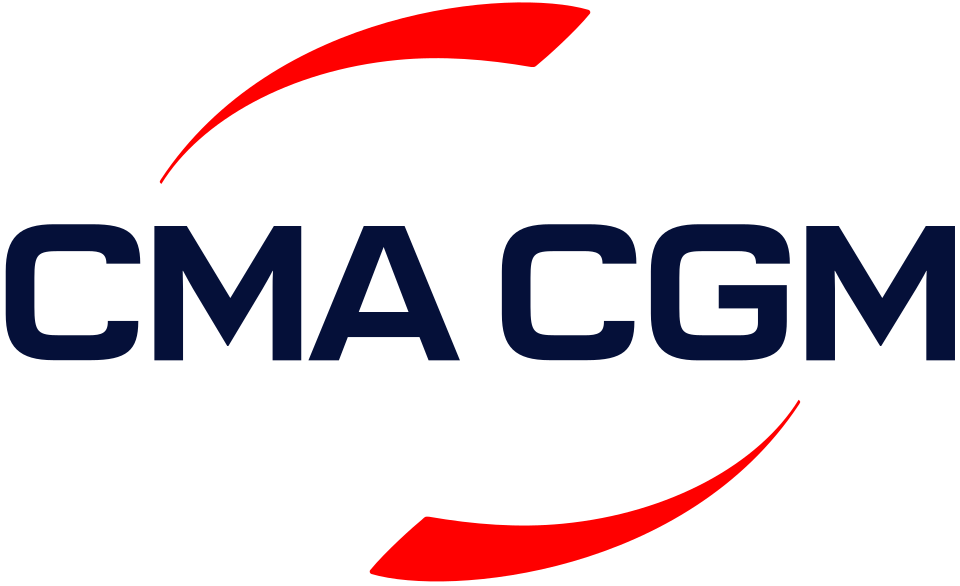

CMA CGM
CMA CGM은 프랑스 마르세유에 본사를 둔 해상 운송·물류 기업이다. 해상 운송, 항만 운영, 공급망 관리, 창고 사업을 하며 세계 3위 규모의 컨테이너 선사이다.
최종 업데이트

CMA CGM는 어떤 브랜드인가
CMA CGM은 프랑스의 해상 운송·물류 기업으로, 본사는 마르세유에 있다. 사업은 해상 운송, 항만 운영, 공급망 관리, 창고 운영으로 이루어진다.
160개국에 400개 사무소와 750개 창고를 두고 있으며, 직원은 155,000명, 선단은 593척이다. 세계 상업항 521곳 중 420곳에 서비스를 제공하고 257개 항로를 운영하며, 세계에서 세 번째로 큰 컨테이너 선사이다.
2024 회계연도 매출은 US$55.48 billion이었다. 회사명은 두 전신 회사인 Compagnie Maritime d'Affrètement(CMA)와 Compagnie Générale Maritime(CGM)의 머리글자에서 따온 약칭이다.
CMA CGM는 어떻게 시작되고 성장했나
Jacques Saadé가 1978년 마르세유를 기반으로 지중해 역내 정기선 서비스 회사 CMA를 세웠다. CGM의 뿌리는 1851년 설립된 Messageries Maritimes와 1855년 설립 후 1861년 Compagnie Générale Transatlantique로 개칭된 회사이며, 프랑스 정부가 1974년부터 1977년까지 두 회사를 합병해 Compagnie Générale Maritime을 만들었다.
CGM은 1996년 프랑스 정부에 의해 민영화되어 CMA에 매각되었고, 두 회사가 합쳐져 CMA CGM이 되었다. 1998년에는 Australian National Line을 인수했고, 2005년 9월 Bolloré Group의 Delmas를 €600 million에 인수하기로 해 2006년 1월 5일 완료했다.
2007년에는 Compagnie Marocaine de Navigation(Comanav)과 대만 기반 Intra-Asia 컨테이너 선사 Cheng Lie Navigation Corp.(CNC Line)를 인수했다.
CMA CGM의 브랜드 아이덴티티는 무엇인가
마르세유에서 출발한 CMA와 국영 선사 CGM이 1996년 합쳐져 형성된 세계 3위 컨테이너 선사이다. 해운에 항만·물류·창고 사업을 결합한 점이 특징이다.
CMA CGM의 대표 제품과 서비스는 무엇인가
CMA CGM의 사업은 해상 운송, 항만 운영, 공급망 관리, 창고 운영으로 구성된다. 해상 운송에서는 593척의 선단으로 257개 항로를 운영하며, 세계 상업항 521곳 중 420곳에 서비스를 제공한다.
항만 부문에서는 2009년 CMA CGM/Terminal Link와 Souria Holding이 참여한 컨소시엄을 통해 시리아의 Latakia 항을 인수했다. 창고는 750개, 사무소는 400개이며 160개국에 진출해 있다.
이 밖에 1998년 Australian National Line, 2007년 대만 기반 Intra-Asia 컨테이너 선사 Cheng Lie Navigation Corp.(CNC Line)를 인수했다.
CMA CGM는 지금 어떤 상태인가
현재 160개국에 400개 사무소, 750개 창고, 155,000명의 직원과 593척의 선단을 보유하고 있다. 세계 상업항 521곳 중 420곳에 서비스를 제공하고 257개 항로를 운영한다.
세계에서 세 번째로 큰 컨테이너 선사이며 2024 회계연도 매출은 US$55.48 billion이었다. 본사는 프랑스 마르세유에 있다.
CMA CGM 로고는 어떻게 변해왔나
자주 묻는 질문
CMA CGM는 어느 나라 브랜드인가요?
CMA CGM는 프랑스의 모빌리티 브랜드입니다.
CMA CGM는 언제 설립되었나요?
CMA CGM는 1999년 설립되었습니다.
CMA CGM의 브랜드 아이덴티티는 무엇인가요?
마르세유에서 출발한 CMA와 국영 선사 CGM이 1996년 합쳐져 형성된 세계 3위 컨테이너 선사이다.
CMA CGM의 대표 제품은 무엇인가요?
CMA CGM의 사업은 해상 운송, 항만 운영, 공급망 관리, 창고 운영으로 구성된다.
CMA CGM는 현재 어떤 상태인가요?
현재 160개국에 400개 사무소, 750개 창고, 155,000명의 직원과 593척의 선단을 보유하고 있다.
CMA CGM의 창업자는 누구인가요?
CMA CGM의 창업자는 자크 사데입니다(위키데이터 기준).
CMA CGM의 본사는 어디에 있나요?
CMA CGM의 본사는 마르세유에 있습니다(위키데이터 기준).
출처와 검증
CMA CGM 관련 참고: 공식 웹사이트 · 위키데이터 Q1023867 · 한국어 위키백과 · 영어 위키백과. 브랜드명은 한글과 원어를 함께 표기하되 데이터에 없는 표기는 만들지 않습니다. 기원 국가·설립연도는 검수된 정의문에서 확인된 값을 우선하고, 없을 때만 공식 웹사이트 URL이 일치하는 위키데이터 개체의 값을 씁니다. 위키데이터 값은 2026-11-13 기준입니다.